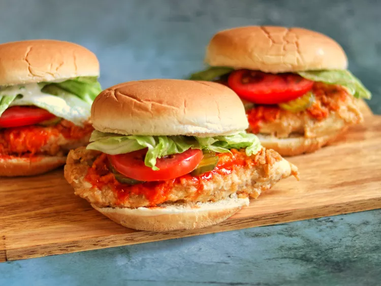

Home
Crispy Buffalo Fried Chicken Sandwich

Description
This recipe makes deliciously tender and juicy fried chicken sandwiches with a bit of heat from Buffalo sauce in every bite.
Ingredients
- 3 (8 ounce) skinless, boneless chicken breast halves
- ⅔ cup buttermilk
- 1 ½ teaspoons garlic powder
- 1 cup all-purpose flour
- 1 teaspoon poultry seasoning
- ¼ teaspoon ground black pepper
- ¼ cup canola oil, or as needed
Steps
- Slice each chicken breast horizontally into 2 thin fillets. Place 6 fillets in a resealable zip-top bag with buttermilk, 1 tablespoon Buffalo sauce, and garlic powder. Seal the bag and shake to blend ingredients and evenly coat the chicken. Refrigerate for at least 2 hours or overnight.
- Preheat the oven to 350 degrees F (175 degrees C).
- Combine flour, poultry seasoning, and pepper in a shallow dish or pie plate. Blend with a fork or whisk.
- Remove chicken from the marinade and shake off excess. Dip chicken in the breading mixture until well and evenly coated on both sides. Discard the remaining marinade.
- Add enough oil to a large skillet so that it thickly coats the bottom and heat over medium-high heat until sizzling but not smoking. Place 2 chicken fillets in the skillet so they fit comfortably; do not overcrowd. Fry until crispy and golden brown, 2 to 3 minutes per side. Drain chicken on paper towels and repeat twice, adding more oil as necessary, to fry remaining chicken. Transfer chicken to a baking sheet.